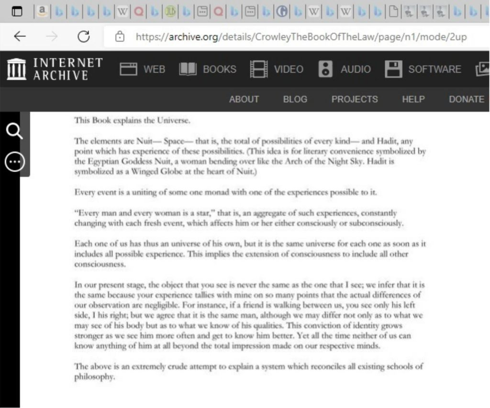
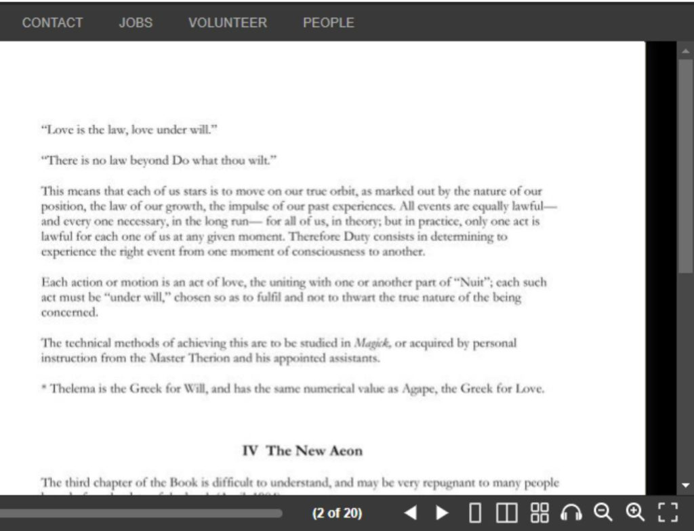
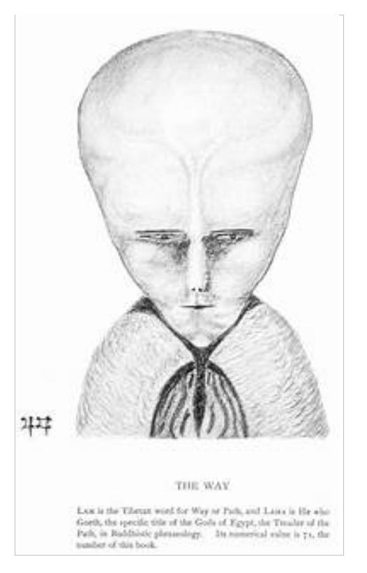
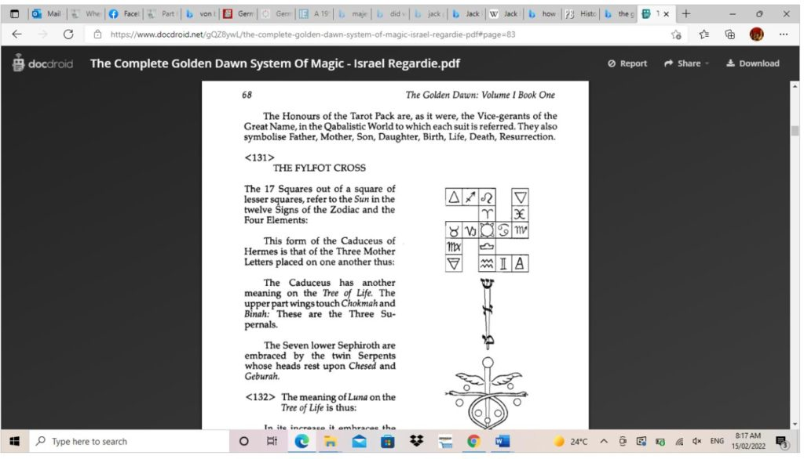

The following is the 19th part from a series of articles describing the adventure that a follower who goes by the handle "daegonmagus" has experienced since reading MM. They are very interesting and fascinating. I hope that you all learn from his journey and maybe learn a thing or two as he relates his unique experiences to the readership here. This particular read is truly enjoyable. I hope you all enjoy it as much as I have. -MM
Part 19 – Aleister Crowley and his Thelemic Order of NASA… or was it M16?
“NASA are the most authoritative organisation on space and would never lie to us or keep secrets when it comes to the discovery of ETs!” Right…..anybody in the crowd? ……Anybody? This is a paraphrasing of a recent conversation with my brother in law in regards to the idea of Simulation Theory, and that we are living in a holographic world. So yeah, ok, he didn’t specifically mention ETs, I may have exaggerated that part, but when I brought up the quantum physics double slit experiment etc (real basic stuff, for I am no quantum phycisist) and the idea of astral projectors/ lucid dreamers being the witnesses of the other side of the quantum coin – the guys that see the world in wave form rather than particle form – you’d be amazed at how quickly the conversation turned towards NASA, and their recent announcement of a fucking meteor that could “potentially” wipe out earth, which is what was apparently really concerning him (I would have thought being trapped in a simulation would be a more concerning affair, but you know, that’s just me). Or you know, that his grandmother was born in a Nazi PoW camp, and he just seemingly overlooked the whole Operation Paperclip thing.
But yeah I am used to it. It is the usual deflection tactic when I hit upon a subject that get’s too deep for him. Cut me off mid sentence and trail off onto some shit that doesn’t even relate to anything I am talking about. Try and make himself sound smart because he read a few articles on the old innernet. Never mind I know a guy who is a qualified astrophysicist that would suggest it is a load of bullshit not worth worrying about {wink wink}. My brother in law always seems to have that one friend in a similar field of expertise that he has conveniently broached this exact subject with before and rattles off some half arsed excuse as to why I should believe this friend’s word over the experts I have spoken to. The experts whose first hand experiences I use as a basis for formulating my opinions on such matters. Not that I get more than two fucking words out before I am scoffed at with condescension when I use the small breaks between his egotism to try and explain why NASA is the last organisation on earth I would bother believing.
Mind you, this is a guy who is 31 years old and still lives with his mother, has never bothered trying to find his own place, turned down an opportunity at a plumbing apprenticeship when he was fresh out school (and now wonders why his life sucks) and thinks it is perfectly acceptable to use people with down syndrome as a means to joke about Robert Downey Jr’s mental capacity simply because he works with them (this is where the conversation ultimately headed). He seems to have some ever evolving qualification that varies quite substantially in respect to its field whenever he brings it up. One moment it’s a diploma in warehousing, the next it’s a certificate in carer services when he realises I actually managed an electronics factory and have real world experience with warehousing that trumps his theoretical knowledge any day……Next he’ll be telling me he got a fucking PhD in astrophysics in the 3 months I didn’t see him. Yeah, a real armchair researcher if ever there was one. But hey, I have to admit, I found it pretty impressive that he could at least entertain the idea of a simulation. A year ago that conversation would have been completely off the table.
Remind you of anyone? Seems to be the entire fucking UFO community whenever someone mentions something remotely out of the mainstream approved narrative. Like the guys on reddit that got the reddit admins to send me a message saying they were concerned for my mental health when I tried telling them my research suggests non physical entities are contacting people in the occult community (research which I have presented here in past articles that proves I am not the only one having these strange experiences, and that they are in fact fairly common in the occult community). This one is for you guys, if you have attention spans to read beyond three words (I know a lot of you found four of them to be too much to handle). Oh and while we are on the subject of PhD’s and arm chair research I should point out I have do in fact have a PhD…..in googling shit, seeing as it seems to be the accepted form expertise these days. But unlike my contemporaries, the crux of my argument is freely available on Wikipedia for those who do actually know how to research, not that I am expecting any of the reddit experts to be in amongst that crowd. Shall I continue?
Let’s get back to that statement “NASA are the most authoritative organisation on space and would never lie to us or keep secrets when it comes to the discovery of ETs!” Ok, so, the least you could do is get to know the parent organisation that you are basing your whole argument around before arguing with me on why I should bother to listen to them. If not, you might find yourself embarrassed at the idea it is pretty much like saying “the Freemasons are the most transparent society on the planet”. Or at the idea that “you’re a fucking nutcase” is as equally applicable to the founder of NASA as it is to yours truly. We will delve into this, but before we do, let’s dig into some of my arm chair research on a well known figure, and how it relates to the idea that if people were being contacted by non physical entities through means such as astral projection and lucid dreaming, NASA would be THE LAST FUCKING ORGANISATION ON THE FACE OF THE PLANET THAT WOULD BOTHER TELLING YOU ABOUT IT. Are you ready to take the words of L Ron Hubbard and Scientology just as serious as NASA? Something tells me that no, you are not, which highlights the fact you are too mentally immature to be having this conversation, and that your arm chair research is just a façade for “I can’t be fucked actually researching anything, before offering my opinion on it”.
Allow me to shit all over that egotistical ignorance you think is real world knowledge:
Edward Alexander Crowley was born on the 12th of October 1875, to pair of wealthy fundamentalist Christians of the Plymouth Brethren faith. His father, originally a Quaker, and also an Edward, was an engineer, and owned a family brewing business – Crowley’s Alton ales – which had allowed him an early retirement before his son’s birth. At the age of 11, Edward Alexander inherited a third of this wealth after his father died of tongue cancer. He soon began rejecting the religious views held by his parents, indulging in acts considered by them as morally indecent such as smoking, masturbating and having sex with prostitutes (in which he contracted gonorrhoea and syphilis – talk about a good time).
Such rebellion included a change of name from Edward to Aleister, when he attended the Trinity college in Cambridge to study Philosophy. This behaviour and rejection of the Christian faith would lead Edward’s mother, Emily, to eventually start calling him “the Beast”, which Crowley would later revel in and wear as a badge of honour. Later on in his life, Crowley would expound upon this title to include the number 666, which came from a derivation of the Hebrew alphabet known as Gematria – it had nothing to do with Satanism and the devil, as many people like to suggest. In Gematria, each Hebrew letter is assigned a numerical value and words are compared with other words of equal value. Crowley’s 666 came from the comparison of the word Therion – Greek for “wild beast” – with his own name, of which had an equal value. It was because of this that Crowley would eventually come to be known as Master Therion to his many students. Another name he was known by was Pedurabo.
Crowley believed he was the reincarnation of the well known magician and practitioner of alchemy, Eliphas Levi (amongst other notable figures from history) – who has been dubbed as the man who coined the term “the occult” – partly due to the magician dying in the same year he was born. I vaguely remember another self proclaimed occultist talking about their own reincarnation, [daegonmagus] – Part 2 – Contact with the Elder Guardians (metallicman.com), Not that that is relevant or anything….
Continuing on the down the Wikipedia entry on Crowley we come to learn a few interesting things some of which may or may not actually be true, and some which have a back trail of evidence to suggest they are legitimate claims. We learn about how Crowley joined the Hermetic Order of the Golden Dawn before seemingly tearing it apart, how he became friends with Theodore Ruess and was invited to join the Ordo Templi Orientis, or how he created his own Order of the Silver Star – the Argentum Astrum. Then there are the tales of him going out into the Egyptian desert with his wife Rose and engaging in conversation with a non physical intelligence he called Aiwass, whose message he wrote down and became the “Book of the Law” of what would go on to become his Thelemic religion. We read about the time him and his associate Neuberg went out into a desert and summoned the demon of the abyss, Choronzon, which Crowley allegedly deliberately let possess him. Some things about his later life drug addictions with coke and heroin. What we don’t read about is Crowley’s other exploits like providing commentary for the Goetia, aka the Lesser Key of Solomon the King:
Did you spot the NASA connection? If not, don’t worry; well get to it later. Just note, it is buried behind a link somewhere at the bottom of the page.
In that entry, we also learn about a “fictional” book Crowley wrote called Moonchild – the same book of Crowley’s I found in my grandmother’s library in her abandoned house. What isn’t mentioned is that Moonchild is a book about a bunch of occultists who are trying to incarnate the soul of a demon into the vessel of a new born human child. I started reading it at some point during the third decade of my life but gave up after a few pages as I found Crowley’s writing to be very poor and unimaginative. What can I say: I have standards.
“Moonchild is a novel written by the British occultist Aleister Crowley in 1917. Its plot involves a magical war between a group of white magicians, led by Simon Iff, and a group of black magicians, over an unborn child. It was first published by Mandrake Press in 1929 and its recent edition is published by Weiser. In this work, numerous acquaintances of Crowley appear as thinly disguised fictional characters. Crowley portrays MacGregor Mathers as the primary villain, including him as a character named SRMD, using the abbreviation of Mathers' magical name. Arthur Edward Waite appears as a villain named Arthwaite, and the unseen head of the Inner Circle of which SRMD was a member. "A.B." is theosophist Annie Besant. Among Crowley's friends and allies Allen Bennett appears as Mahatera Phang, Leila Waddell as Sister Cybele, the dancer Isadora Duncan appears as Lavinia King, and her companion Mary D'Este (mother of Preston Sturges, and who helped Crowley write his magnum opus Magick: Book 4 under her magical name 'Soror Virakam') appears as Lisa la Giuffria. Cyril Grey is Crowley himself, while Simon Iff is either an idealized version of an older and wiser Crowley or his friend Allen Bennett.
Plot summary
A year or so before the beginning of World War I, a young woman named Lisa la Giuffria is seduced by a white magician, Cyril Grey, and persuaded into helping him in a magical battle with a black magician and his black lodge. Grey is attempting to save and improve the human race and condition by impregnating the girl with the soul of an ethereal being — the moonchild. To achieve this, she will have to be kept in a secluded environment, and many preparatory magical rituals will be carried out. The black magician Douglas is bent on destroying Grey's plan. However, Grey's ultimate motives may not be what they appear. The moonchild rituals are carried out in southern Italy, but the occult organizations are based in Paris and England. At the end of the book, the war breaks out, and the white magicians support the Allies, while the black magicians support the Central Powers.” - Moonchild (novel) - Wikipedia
For the MM audience who have a brain and can put two and two together here, read between the lines of what I am trying to tell you; Spencer also claimed the Alien Interview was a work of “fiction”. Comparing the two works brings a whole new level of meaning and contemplation to just what the fuck it was these secret societies were getting up to at the turning of the 20th century.
Getting back to the Wikipedia entry on Crowley, one of the more “absurd” claims is that he was in fact working for the British Government’s MI6 department helping them spy on the Germans, who apparently got him to spy on the British Government, which was supposedly suspected by American Intelligence….or something. This particular claim, even just stopping at a connection to the British government, is hard to substantiate as there appears to be only one verifiable source for its origin; a professor of History from the university of Idaho:
“Dr. Richard B. Spence is a Professor of History at the University of Idaho where he has taught since 1986. His specialties include Russian, military, espionage and occult history. One of his most popular courses at UI deals with the role of conspiracies and secret societies in history.”
….as it apparently says on his linked in page.
This guy seems to make a valid argument against Spence’s research, suggesting it is a stretch at best, and is more circumstantial rather than being based on real facts: Was Aleister Crowley a Spy? ‘Secret Agent 666’ Review – John le Bon
Doesn’t matter though, the guy is a professor, and going by skeptic logic this means he must be telling the truth…..Ok yeah, I am not that facetious. But hey since we are talking about the ol innernet and mainstream sources of information that we should trust (like NASA), here is a link to a Guardian newspaper report suggesting Ian Fleming based the Blofeld character in his James Bond series off Crowley:
Beyond belief | Books | The Guardian
In case you didn’t bother reading it, that article suggests rather matter of factl-y that Crowley was Fleming’s go to guy when it came to interrogating Occultist Nazi Rudolph Hess. It even mentions – albeit very vaguely – the NASA connection Crowley had through Jack Parsons:
“Yet the hysterical press accounts of sex, drugs and sacrifice at his Abbey of Thelema, in Sicily in the early 1920s, remain the core of the myth of Crowley as evil incarnate. It was an image, along with his famously hypnotic stare, that led Bond author Ian Fleming to model Blofeld on Crowley. They met when Fleming worked in British intelligence during the war. That a man so publicly reviled could still penetrate the corridors of power is a prime example of his unlikely reach. Crowley was Fleming's first choice for interrogating Rudolf Hess when the occult-obsessed Nazi was captured in Scotland after a bizarre astrological sting. It was also Crowley who gave Churchill his famous victory sign, a magickal gesture to counteract the Nazi's use of the swastika. Indeed, his hand appears in many unexpected places - there is even a story that he aligned Stamford Bridge and gave Chelsea its team colours - but his hidden influence was not restricted to the British war effort or the Premiere League. In the 1940s, one of his closest followers was a young Californian adept, Jack Parsons, one of the founding fathers of the American space programme. His work at the fledgling Jet Propulsion Laboratories lay the groundwork for the Apollo moon missions.”
Funny, Jack Parson is mentioned back in the Aleister Crowley Wikipedia link, in the same sentence as another well known figure, this time with a little more confidence of fact:
“L. Ron Hubbard, the American founder of Scientology, was involved in Thelema in the early 1940s (with Jack Parsons), and it has been argued that Crowley's ideas influenced some of Hubbard's work.” - Aleister Crowley - Wikipedia
Crowley’s entry also suggests he had an affinity for Nazism:
“Pasi described Crowley's affinity to the extreme ideologies of Nazism and Marxism–Leninism, which aimed to violently overturn society: "What Crowley liked about Nazism and communism, or at least what made him curious about them, was the anti-Christian position and the revolutionary and socially subversive implications of these two movements. In their subversive powers, he saw the possibility of an annihilation of old religious traditions, and the creation of a void that Thelema, subsequently, would be able to fill. Crowley described democracy as an "imbecile and nauseating cult of weakness",[267] and commented that The Book of the Law proclaimed that "there is the master and there is the slave; the noble and the serf; the 'lone wolf' and the herd””
I guess one could take that last sentence either way. Regardless, we are starting to head into some very concerning territory in regards to the Nazi’s and Crowley/ Occultism. Let’s strengthen that connection:
“Crowley was now living largely off contributions supplied by the O.T.O.'s Agape Lodge in California, led by rocket scientist John Whiteside "Jack" Parsons.[194] Crowley was intrigued by the rise of Nazism in Germany, and influenced by his friend Martha Küntzel believed that Adolf Hitler might convert to Thelema; when the Nazis abolished the German O.T.O. and imprisoned Germer, who fled to the US, Crowley then lambasted Hitler as a black magician.”
So uh Hitler was a prime candidate for Thelema huh…..and the guy who founded Nasa’s JPL was a fucking Thelemite as well? “John Whiteside Parsons (born Marvel Whiteside Parsons;[nb 1] October 2, 1914 – June 17, 1952) was an American rocket engineer, chemist, and Thelemite occultist. Associated with the California Institute of Technology (Caltech), Parsons was one of the principal founders of both the Jet Propulsion Laboratory (JPL) and the Aerojet Engineering Corporation. He invented the first rocket engine to use a castable, composite rocket propellant,[1] and pioneered the advancement of both liquid-fuel and solid-fuel rockets.
Or should I say a pin up boy for the OTO: Smith wrote to Crowley saying that Parsons was "a really excellent man ... He has an excellent mind and much better intellect than myself ... JP is going to be very valuable".[64] Wolfe wrote to German O.T.O. representative Karl Germer that Parsons was "an A1 man ... Crowleyesque in attainment as a matter of fact", and mooted Parsons as a potential successor to Crowley as Outer Head of the Order.[65] Crowley concurred with such assessments, informing Smith that Parsons "is the most valued member of the whole Order, with no exception!"[62]” - Jack Parsons (rocket engineer) - Wikipedia
And its not as if Thelema was just a passing hobby for Jack either; Wikipedia suggests he was devoting his entire pay checks into the organisation, and was wholeheartedly committed to its concepts. Not only that, Parsons was at one point palsy with the founder of Scientology who was also a Fellow Thelemite:
“Science fiction writer and U.S. Navy officer L. Ron Hubbard soon moved into the Parsonage; he and Parsons became close friends. Parsons wrote to Crowley that although Hubbard had "no formal training in Magick he has an extraordinary amount of experience and understanding in the field. From some of his experiences I deduce he is direct touch with some higher intelligence, possibly his Guardian Angel. ... He is the most Thelemic person I have ever met and is in complete accord with our own principles.”
And in case you weren’t aware of what Hubbard’s Dianetics/Scientology religion was about, allow me to fill that gap in knowledge. Bear in mind this was from a guy whose own son said his father believed himself to be the embodiment of “Satan”;
“Scientology followers believe that a human is an immortal, spiritual being (Thetan) that is resident in a physical body. The Thetan has had innumerable past lives and it is observed in advanced (and – within the movement – secret) Scientology texts that lives preceding the Thetan's arrival on Earth were lived in extraterrestrial cultures. Scientology doctrine states that any Scientologist undergoing "auditing" will eventually come across and recount a common series of events.[26] Part of these events include reference to an extraterrestrial life-form called Xenu. The secret Scientology texts say this was a ruler of a confederation of planets 70 million years ago, who brought billions of alien beings to Earth and then killed them with thermonuclear weapons. Despite being kept secret from most followers, this forms the central mythological framework of Scientology's ostensible soteriology – attainment of a status referred to by Scientologists as "clear". These aspects have become the subject of popular ridicule.
I bet they have.
And while we are on the subject of Parson’s friends, MM would be interested to know the following:
“In New York he met with Karl Germer, the head of the O.T.O. in North America and in Washington, D.C. he met Poet Laureate Joseph Auslander, donating some of Crowley's poetry books to the Library of Congress.[81] He also became a regular at the Mañana Literary Society, which met in Laurel Canyon at the home of Parsons' friend Robert A. Heinlein and included science fiction writers including Cleve Cartmill, Jack Williamson, and Anthony Boucher.”
Now to understand this Parson’s/ Hubbard connection properly, we need to go back to Crowley and his Thelemic Order. What in the actual fuck is Thelema anyway? Well, we mentioned that Crowley, whilst in Cairo with his wife Rose, went out into the desert and received a message from a non physical entity. Rose apparently wasn’t into occultism, and couldn’t give two shits about Crowley’s undertakings…..that was until she went into a trance and this non physical being, who Crowley called Aiwass, began speaking through her, laying down the {book of the} law. Crowley transcribed it and it became his Holy Books of Thelema that basically dictated what the whole order was about. For those who have not read the books, you are not missing out on much. A lot of it seems to be a mix of incoherent babble that Crowley himself even suggests he doesn’t know what the fuck it means. In amongst this collection of seemingly random gibberish is the infamous RPSTOVAL code, that Crowley suggests will be “expounded upon by someone in the distant future”, and who his followers like to try and decipher using Gematria:
4 6 3 8 a b k 2 4 a l g m o r 3 y x 24 89 r p s t o v a l
For anyone interested here is Crowley’s Book of the Law. The Book Of The Law : Aleister Crowley : Free Download, Borrow, and Streaming : Internet Archive. Note there are some striking similarities with his philosophy and things that MM has said in regards to consciousness, or Airl’s view of the universe:


Now, to get to the UFO/ Thelema connection, we need to delve a bit deeper into some things that are not mentioned on Wikipedia, and are just as hard to confirm as Spence’s suggestion Crowley was an MI6 spy.
Fourteen years after his contact with Aiwass, Crowley supposedly was contacted by another entity during what is known as the Amalantrah working with his executor and somewhat heir to his magical prowess, Kenneth Grant. What actually took place must be left to speculation given that the surviving records of the working are fragmented at best, but what seems clear is that Crowley drew a picture which had something to do with this working, which he titled LAM. I briefly touched on this entity in my article https://metallicman.com/daegonmagus-part-18-a-look-at-non-physical-contact-through-participants-external-to-metallicman/ when I told you the Tool drummer had his own clothing line featuring the image.

While some, like this guy from LAM I AM | Aleister Crowley 2012 (ac2012.com), suggest it is an obscure self portrait of Crowley, others have suggested, quite assuredly that Crowley and Grant were trying to open a portal in space between two stars. The myth is that they were successful which led to Lam – an interdimensional entity – popping through to say hello. Apparently many occultists have had weird experiences with UFOs and similar contact after trying to recreate the ritual:
What can be agreed on, is that Lam appears on the front page of Voice of the Silence by Theosophical Society founder, Madam Helena Blavatsky. If you haven’t already read my article first mentioning Lam, I suggest you do so, as it alludes to the idea that Blavatsky was given a hybridisation schedule by the non physical entities she was in contact with (which seems to have very likely made its way into the hands of the Nazi’s, but more on that later.)
Getting back to Lam, The {modern day} OTO have even gone so far as to have their members document any experiences resulting from their workings with the Amalantrah ritual, so it seems to have some substance:
“Crowley gave the drawing to Kenneth Grant in May 1945, following an astral working in which they were both involved. Since then it has become apparent that Lam is in fact a trans-mundane or extra-terrestrial entity, with whom several groups of magicians have established contact, most notably Michael Bertiaux in the 1960s, and agroup of OTO initiates in the 1970s. Much remains unclear, however, hence the need for further investigation of this entity” – Typhonian Ordo Templi Orientis — Kenneth Grant — LAM (parareligion.ch)
Remember how I told you my friend Severin, who was contacted by an elusive figure and given information on the merge of the astral and physical planes? To my knowledge, Severin never bothered with the Amalantrah ritual, but the coincidence is a bit hard to ignore, given he was in the OTO.
So for the skeptics, at the very least you have to admit this sounds fucking insane right? No matter what way you look at it. Who in their right mind would believe such a load of fucking tripe?
Well, your NASA JPL founder for one: “The Babalon Working was a series of magic ceremonies or rituals performed from January to March 1946 by author, pioneer rocket-fuel scientist and occultist Jack Parsons and Scientology founder L. Ron Hubbard.[1] This ritual was essentially designed to manifest an individual incarnation of the archetypal divine feminine called Babalon. The project was based on the ideas of Aleister Crowley, and his description of a similar project in his 1917 novel Moonchild.” - Babalon Working - Wikipedia
And from Parson’s entry:
“Parsons and Sara were in an open relationship encouraged by the O.T.O.'s polyandrous sexual ethics, and she became enamored with Hubbard; Parsons, despite attempting to repress his passions, became intensely jealous.[109] Motivated to find a new partner through occult means, Parsons began to devote his energies to conducting black magic, causing concern among fellow O.T.O. members who believed that it was invoking troublesome spirits into the Parsonage; Jane Wolfe wrote to Crowley that "our own Jack is enamored with Witchcraft, the houmfort, voodoo. From the start he always wanted to evoke something—no matter what, I am inclined to think, as long as he got a result." He told the residents that he was imbuing statues in the house with a magical energy in order to sell them to fellow occultists.[110] Parsons reported paranormal events in the house resulting from the rituals; including poltergeist activity, sightings of orbs and ghostly apparitions, alchemical (sylphic) effect on the weather, and disembodied voices. Pendle suggested that Parsons was particularly susceptible to these interpretations and attributed the voices to a prank by Hubbard and Sara.[110] One ritual allegedly brought screaming banshees to the windows of the Parsonage, an incident that disturbed Forman for the rest of his life.[111] In December 1945 Parsons began a series of rituals based on Enochian magic during which he masturbated onto magical tablets, accompanied by Sergei Prokofiev's Second Violin Concerto. Describing this magical operation as the Babalon Working, he hoped to bring about the incarnation of Thelemite goddess Babalon onto Earth. He allowed Hubbard to take part as his "scribe", believing that he was particularly sensitive to detecting magical phenomena.[112] As described by Richard Metzger, "Parsons jerked off in the name of spiritual advancement" while Hubbard "scanned the astral plane for signs and visions."[113]
Their final ritual took place in the Mojave Desert in late February 1946, during which Parsons abruptly decided that his undertaking was complete. On returning to the Parsonage he discovered that Marjorie Cameron—an unemployed illustrator and former Navy WAVE—had come to visit. Believing her to be the "elemental" woman and manifestation of Babalon that he had invoked, in early March Parsons began performing sex magic rituals with Cameron, who acted as his "Scarlet Woman", while Hubbard continued to participate as the amanuensis. Unlike the rest of the household, Cameron knew nothing at first of Parsons' magical intentions: "I didn't know anything about the O.T.O., I didn't know that they had invoked me, I didn't know anything, but the whole house knew it. Everybody was watching to see what was going on."[114] Despite this ignorance and her skepticism about Parsons' magic, Cameron reported her sighting of a UFO to Parsons, who secretly recorded the sighting as a materialization of Babalon.
And some more on the Babalon working, and contact by non physical entities in general: Inspired by Crowley's novel Moonchild (1917), Parsons and Hubbard aimed to magically fertilize a "magical child" through immaculate conception, which when born to a woman somewhere on Earth nine months following the working's completion would become the Thelemic messiah embodying Babalon.[116][117] To quote Metzger, the purpose of the Babalon Working was "a daring attempt to shatter the boundaries of space and time" facilitating, according to Parsons, the emergence of Thelema's Æon of Horus.[113] When Cameron departed for a trip to New York, Parsons retreated to the desert, where he believed that a preternatural entity psychographically provided him with Liber 49, which represented a fourth part of Crowley's The Book of the Law, the primary sacred text of Thelema, as well as part of a new sacred text he called the Book of Babalon.[118] Crowley was bewildered and concerned by the endeavor, complaining to Germer of being "fairly frantic when I contemplate the idiocy of these louts!" Believing the Babalon Working was accomplished, Parsons sold the Parsonage to developers for $25,000 under the condition that he and Cameron could continue to live in the coach house, and he appointed Roy Leffingwell to head the Agape Lodge, which would now have to meet elsewhere for its rituals” Unable to pursue his scientific career, without his wife and devoid of friendship, Parsons decided to return to occultism and embarked on sexually based magical operations with prostitutes. He was intent, informally following the ritualistic practice of Thelemite organization the A∴A∴, on performing "the Crossing of the Abyss", attaining union with the universal consciousness, or "All" as understood in the context of the Great Work, and becoming the "Master of the Temple".[133] Following his apparent success in doing so, Parsons recounted having an out-of-body experience invoked by Babalon, who astrally transported him to the biblical City of Chorazin, an experience he referred to as a "Black Pilgrimage". Accompanying Parsons' "Oath of the Abyss" was his own "Oath of the AntiChrist", which was witnessed by Wilfred Talbot Smith. In this oath, Parsons professed to embody an entity named Belarion Armillus Al Dajjal, the Antichrist "who am come to fulfill the law of the Beast 666 [Aleister Crowley]".[133] Viewing these oaths as the completion of the Babalon Working, Parsons wrote an illeist autobiography titled Analysis by a Master of the Temple and an occult text titled The Book of AntiChrist. In the latter work, Parsons (writing as Belarion) prophesied that within nine years Babalon would manifest on Earth and supersede the dominance of the Abrahamic religions.[134]
I thought self proclaimed embodiment of Satan Hubbard was bad. I might be “crazy”, but I sure as fuck aren’t “trying to summon the whore of Babylon into a newborn child crazy”. This guy was a fucking nutjob (if you go by common society’s standards), yet still displayed more intelligence than those reddit skeptics and my own god damned brother in law. You know, he’s kinda got a lot of rocket research behind him to back that theory up. Did anyone make him undergo a psychological evaluation while he worked at NASA, I wonder?
I mean Jack wasn’t exactly stupid was he, nutjob or not? He was, after all the American version of Werner Von Braun, and it could be argued it was because of him we got to the moon (he was actually involved in developing rocket systems for that very purpose). His discoveries in rocket propulsion were the foundation by which the whole of NASA was built upon. So why the fuck was he messing around with a book written by Crowley if it was just a piece of fiction and incorporating its content into his rituals? You have to admit, it seems a little shady to trust in an organisation whose founder was engaging in such ludicrous practices with his bestie, Mr Hubbard. Let’s face the fact, NASA has got dodgy fucking cult written all over it. You can’t call me a nutcase for saying I was contacted by non physical entities, and then turn around and tell me Jack wasn’t one either. But hey, let’s not stop the logical thought train there. Let’s dig a bit deeper into this.
I mentioned Werner von Braun, and in case you didn’t get the memo, here was another rocket scientist that had some things to say when it came to aliens. And who Jack Parsons at one point spoke to on the phone for many hours. At least this guy didn’t seem to be running around California blowing shit up and having sex with anything that walked in an effort to create a demon child. But to really understand what the hell is going on here, you need to understand the suggestion that the Nazi’s were heavily invested in occult concepts:
In his book, Element Encyclopedia of Secret Societies, John Michael Greer, a self proclaimed druid and Freemason (and not to be confused with Ufologist Dr Steven Greer) suggests that the Nazi party was born out of a secret society of occultists that believed in the racist ideologies of Ariosophy (an offshoot of Theosophy, surprise surprise); the Thule society. This society was named after Thule; a mythical island that first appeared in classical Greek and Roman writings somewhere North of Britain, which eventually became to be believed as the homeland of the Aryan master race in the proto-Nazi occult movement. In fact, Greer has some very interesting things to say on the transformation of Thule, and how its occult ideologies played an integral role in the formation of the Nazi party:
“THULE Originally ultima Thule, “furthest Thule” in Latin, Thule first appeared in classical Greek and Roman writings as a name for a distant island somewhere north of Britain. The Greek voyager Pytheas of Massalia claimed that he sailed there, and his description of the northern seas has enough accurate details to make the claim plausible; it is likely Pytheas sailed as far as the Orkneys, or possibly even Iceland. In the nineteenth century the name Thule was recycled for a hypothetical lost continent somewhere in the far north. In this form it found its way into proto-Nazi occult movements in central Europe as the lost Arctic homeland of the Aryans, identical to Arktogäa and Hyperborea. See lost continents.
THULE SOCIETY
The National Socialist movement in early twentieth-century Germany emerged out of a complex underground of secret societies, occult traditions, and racist ideologies that historians have just begun to uncover. One crucial piece of the puzzle was an organization known as the Thule-Gesellschaft or Thule Society. Named after the legendary lost continent of Thule, believed by German racists of the time to be the original homeland of the Aryan peoples, the Thule Society posed as a private organization for the study of Germanic folklore. In reality, it was the Munich lodge of an occult secret society, the Germanenorden, whose distinctive blend of racist occultism and right-wing politics defined the central commitments of the Nazi party. See Germanenorden.
The Thule Society was the creation of Rudolf von Sebottendorf, a German-Turkish adventurer who joined the Germanenorden in 1917 and immediately set to work organizing a Munich lodge for the order. His efforts paid off handsomely, increasing membership in Bavaria from 200 to more than 1500 by the autumn of 1918. He rented rooms for the society in the posh Hotel des Vier Jahreszeiten in Munich, and succeeded in attracting members of the Bavarian aristocracy into the organization. He also encouraged two Thule members, Karl Harrer and Anton Drexler, to organize a political circlep for the Munich working class, in the hope of drawing them away from communism.
When the German imperial government collapsed in 1918, a socialist coalition seized power in Bavaria, but was then supplanted by a hardline communist faction headed by Russian exiles. Munich descended into open war, and pitched gun battles, assassinations, and summary executions by firing squad became frequent events. The Thule Society hurled itself into the struggle, networking with other conservative groups and raising a sizeable private army, the Kampfbund Thule, for the final struggle that ended the Bavarian Socialist Republic in May 1919. By that time the political circle headed by Drexler and Harrer had already transformed itself into a political party, the Deutsche Arbeiterpartei (German Workers Party, DAP). Small and poorly organized, the DAP floundered for most of 1919 as most Thule members turned their attention elsewhere. In September of that year, however, the DAP gained a new recruit, an Austrian war veteran named Adolf Hitler. Not long after joining, Hitler convinced the other party members to change the organization’s name to the Nationalsozialistische Deutsche Arbeiterpartei (National Socialist German Workers Party, NSDAP) – a name newspapers and the German public quickly shortened to “Nazi.” See Hitler, Adolf; National Socialism.
As the fledgling party grew explosively, driven by Hitler’s powerful oratory and impressive political skills, Thule Society members gave it vital support and direction. Thule initiate Ernst Röhm, a tough army veteran with a taste for brawling, brought many members of the Kampfbund Thule into the Sturm-Abteilung (Storm Troop, SA) or Brownshirts, the Nazi party’s private army of street thugs. Another Thule member, Rudolf Hess, used his connections throughout the occult community in France and Germany to win support for Hitler, becoming the future Führer’s right-hand man in the process. Other members introduced Hitler to wealthy conservatives in Bavaria and elsewhere in Germany, and brought him into contact with the writer and occultist Dietrich Eckart, who became Hitler’s mentor. By 1925 or a little later, the Thule Society had been completely absorbed into the growing Nazi party, and nearly all its membership, activities, and plans became part of the Nazi system. The occult aspects it had inherited from the Germanenorden ended up becoming part of the SS onceHeinrich Himmler took over that organization in 1929. See SS (Schutzstaffel). Further reading: Goodrick-Clarke 1992” - The Element Encyclopedia of Secret Societies The Ultimate A-Z - John Michael Greer.pdf | DocDroid
But let’s not stop there. Delving even deeper still into the Nazi’s and their occult connection in Greer’s book we find that Crowley wasn’t the only occultist who believed the “lunatic” prospect that he was the reincarnation of someone:
“Perhaps the most serious of Nazi occultists, Himmler believed himself to be the reincarnation of the medieval German king Heinrich I. Under his leadership the SS became an occult secret society with immense influence throughout German society, and the SS headquarters at the medieval castle of Wewelsburg became the center of the Third Reich’s occult dimension as Himmler implemented many of the old ONT programs on a colossal scale. See SS (Schutzstaffel).“
Interesting. Here’s some excerpts I picked up from Israel Regardie’s (Crowley’s Secretary) book, The Golden Dawn, which deals with the whole curriculum of that order. It certainly seems to strengthen the Nazi connection to the occult. From here The Complete Golden Dawn System Of Magic – Israel Regardie.pdf | DocDroid:

The fylfot cross shows us the swastika as being an astrological symbol that combines the forces of 12 months of the zodiac with the four elements, the sun at its centre. It is part of the third lecture of Golden Dawn Curriculum, the first two being preparations for the candidate for their Alchemical undertakings. In other words, this association of the swastika with the zodiac and elements was embedded into the curriculum and would have been taught to every single initiate of the Golden Dawn when Crowley was head of it, and likely the OTO and the Argentum Astrum, considering Crowley’s involvement with those organisations. Interesting when you consider a Greek Neo Nazi political party just pops up out of nowhere some 100ish years later calling themselves the Golden Dawn: Golden Dawn (Greece) – Wikipedia
From that same book, on page 460, in a chapter to do with Clairvoyance: “The guide having made his appearance, he is to be tested by every means at the Seer's disposal. First of all, it is well to assume the Sign of the Grade to which that element is referred. In this instance, the Sign of the Zelator should be made, by physically as well as astrally raising the right arm to an angle of forty-five degrees. The guide should answer this with the same Sign or another which is unrnistakeable proof that he belongs to the element and has been sent to act as guide. If there is deception, these signs will cause him distress, or at once the vision will break up, or the false guide will disappear. He should also be asked clearly and deliberately whether he comes to act as guide in the name of the appropriate Deity Name. If all this strikes the Seer as satisfactory, and his doubts settled, let him follow the guide to wherever he is being led, carefully noting whither he goes, and asking questions about the element or whatever he sees” I found a photo where a few of these elements seem to combine:
So yeah I guess it’s just more coincidences in a string of bizarre coincidences right?
At least they made good rocket propulsion systems, like that other occultist we have been talking about. Which brings me back to Nazi rocket scientist Werner Von Braun. Von Braun was one of the pioneers who worked on the V2 rocket system and was brought to America to work for NASA along with many other Nazi Scientists under Operation Paperclip:
“Wernher Magnus Maximilian Freiherr von Braun (23 March 1912 – 16 June 1977) was a German-American aerospace engineer[3] and space architect. He was the leading figure in the development of rocket technology in Nazi Germany and a pioneer of rocket and space technology in the United States.[4] While in his twenties and early thirties, von Braun worked in Nazi Germany's rocket development program. He helped design and co-developed the V-2 rocket at Peenemünde during World War II. Following the war, he was secretly moved to the United States, along with about 1,600 other German scientists, engineers, and technicians, as part of Operation Paperclip.[5] He worked for the United States Army on an intermediate-range ballistic missile program, and he developed the rockets that launched the United States' first space satellite Explorer 1 in 1958. In 1960, his group was assimilated into NASA, where he served as director of the newly formed Marshall Space Flight Center and as the chief architect of the Saturn V super heavy-lift l,aunch vehicle that propelled the Apollo spacecraft to the Moon.[6][7] In 1967, von Braun was inducted into the National Academy of Engineering, and in 1975, he received the National Medal of Science. He advocated a human mission to Mars.” - Wernher von Braun - Wikipedia Atleast we get the idea the Von Braun was quite a respectable man that only joined the Nazi’s so he could continue his life’s work in regards to rocket research. No mention of Carol Rosin of Fairchild Industries or Lt Colonel Philip J Corso though. Of course, those elements connect Von Braun to ETs, and we can’t have that to tarnish NASA’s image now can we? Allow me to elaborate:
Philip J Corso was a Lieutenant Colonel who worked for General Arthur Trudeau during Eisenhower’s presidency, and had an office at the Pentagon dealing with technological advancements that could be put to military use. In WW2 Corso fought Rommel in Africa, and was charged with rounding up the remnants of the Gestapo in Italy after the war ended. So you could say his resume was quite impressive, and he was quite respectable in regards to his military achievements. Certainly not someone who would feel the need to jump on the UFO bandwagon and bullshit us all with stories of ETs right? Uh, well that’s exactly what Corso did, if you consider his biography bullshit, which most arm chair researchers seem to do.
In his book The Day After Roswell Corso details how he was put in charge of distributing technology recovered FROM THE 1947 ROSWELL CRASH into already established R&D programs in an effort to conceal it and keep it out of the hands of those pesky Russians that had infiltrated the CIA. Things like night vision goggles, fibre optics, kevlar, lasers and integrated circuits, Corso claimed all came from the spacecraft that crashed in the New Mexico desert. He even mentions he saw one of the bodies of the crew. A few months after the books release, Corso died of a heart attack.
Corso suggests he went around to military contractors Fairchild (among others), where he dropped this retrieved tech into the hands of their supervisors with an intent to back engineer it. One of the men who he was in constant contact with to try and gain an understanding of how said tech would work was, you guessed it, Werner von Braun. Von Braun actually became the Vice President of that very same company Corso suggested he dropped some ET tech into the hands of:
“After leaving NASA, von Braun moved to the Washington, D.C. area and became Vice President for Engineering and Development at the aerospace company Fairchild Industries in Germantown, Maryland, on 1 July 1972.”[124] - Wernher von Braun - Wikipedia
But Corso is just bullshitting right? He was just a senile old man who was struggling to find purpose after his impressive military career, and so decided to spin us a story of fiction about aliens crashing into the desert. It isn’t like there is any other proof that backs up Corso’s claim or anything.
Well, the Wikipedia entry on the date surrounding the Bi Polar Junction Transistor seems to very much align with what Corso told us:
“The bipolar point-contact transistor was invented in December 1947[10] at the Bell Telephone Laboratories by John Bardeen and Walter Brattain under the direction of William Shockley. The junction version known as the bipolar junction transistor (BJT), invented by Shockley in 1948,[11] was for three decades the device of choice in the design of discrete and integrated circuits. Nowadays, the use of the BJT has declined in favor of CMOS technology in the design of digital integrated circuits. The incidental low performance BJTs inherent in CMOS ICs, however, are often utilized as bandgap voltage reference, silicon bandgap temperature sensor and to handle electrostatic discharge.” - Bipolar junction transistor - Wikipedia
For those who do not understand the history of technology, it took somewhere between 100 and 150 years to go from the discovery of electricity, to the amplification of analog signals using Thermionic valves. This was at the hands of a myriad of different scientists experimenting with the valve, some of which were Thomas Edison and Tesla. One could say quite a lot of development went into perfecting the valve, and it went through an evolution of change as more and more grids were added to suppress the inherent electrical noise. It found its use in everything from industrial control systems to guitar amplifiers. Then all of a sudden, in December 1947 up pops the transistor, seemingly because someone decided doping germanium with silicone would achieve the same result as what was effectively a light bulb with a few bits of metal inside of it. And this team of a handful of scientists just happened to pull it off a mere months after the Roswell Crash? Yeah uh ok, I guess this make sense……if you are apt at just ignoring anything that presents as an inconvenience to an argument you have no expertise in, like my brother in law does. Skeptics, find me the fucking article that tells me what prompted these guys to try doping germanium with silicone when the whole premise of the thermionic valve had been based on controlling grid electrons in a vacuum through a completely conductive element.
Now, Corso doesn’t actually mention he dropped a BJT into the hands of Fairchild. What he does mention is that he came into the possession of the alien tech something like a decade after the crash, after it was presented to him by Trudeau. It had been sitting in a cabinet in this office, which Corso took over when he moved into the Pentagon, for practically that whole time, simply because Trudeau didn’t know what to do with it. What is more, it didn’t originate with Trudeau. There was a hazy period of a few years immediately proceeding the crash where it is unknown what became of this technology, when it was in the hands of General Twinning (suggested as being an original MJ12 members). What Corso says is that he dropped an integrated circuit into Fairchild’s lap, and, as anyone with a little background in electronics knows, you can’t make an IC without a BJT. Well, at least you couldn’t back in the early 60s when IC’s were invented and supplied globally by that very same Fairchild company (the first to do so). Funny how no one ever thought to try and wire a few million thermionic valves together to achieve the same thing before the concept arrived at Fairchild.
According to Corso, it was Von Braun (very much aware it was ET tech) who suggested he take the IC to the guys over at Bell Labs who had been playing around with the concept of doping silicone with the BJT, suggesting that in that hazy period before the tech fell into his hands, someone had already undertaken an effort to reverse engineer part of it. Given our history of electronics development, it makes no sense that it would take us 100+ years to develop the thermionic valve, to have the concept of doping germanium with silicone pop up overnight and render that whole component almost completely useless. It certainly makes no sense, that in just over a decade later we figured out how to wire millions of these components together to create what would go onto to become the backbone of the computer, without any prior concept of mass manipulation of said valves. The only logical conclusion, in my opinion, is that which is presented to us by Corso. You know people are still allowed those things right? Opinions. Unlike my brother in law, mine is based on knowledge I spent 4 years sitting an apprenticeship for in my efforts to attain a trade level qualification in electronics. At least show me some evidence of a similar background if you want to bother arguing with me on this issue.
Corso also tells us that the who Strategic Defence Initiative was established under the pretence there was an extra terrestrial threat that America needed protection from, and that NASA even knew about ET interactions, which the organisation had actively engaged in covering up. Another reason why I don’t trust them.
So anyway, getting back to Von Braun and Fairchild; Carol Rosin was the first woman to become CEO of Fairchild Industries. Fairchild industries was an offshoot of the military contracted Fairchild Aircraft, and came about after Shockley, the supervisor who worked on the BJT, quit Bell Labs and tried opening his own company to continue to develop it. After some trouble with money, Sherman Fairchild picked it up and gave it a fresh make over, absorbing all the research on the BJT in the process. Now, Rosin ended up becoming a spokesperson for Von Braun after she became CEO. Here’s a little bit of background on her:
“Carol Rosin (born March 29, 1944) is the Founder of the Institute for Security and Cooperation in Outer Space, and also works as a speaker, author, educator, child psychologist[dubious – discuss], futurist, and military strategist.[1] She was also the first female executive of an aerospace company, working as a corporate manager of Fairchild Industries. She is executive director of the Peace and Emergency Action Coalition for Earth, P.E.A.C.E. Inc. and the I.D.E.A Foundation, as well as a world peace ambassador for the International Association of Educators for World Peace.[2] Biography[edit] Born in Wilmington, Delaware in 1944 and a graduate of the University of Delaware, Rosin was the first woman to work as an Aerospace executive at Fairchild Industries and is a leader and the original political architect in the movement to stop Anti-satellite weapons and the Strategic Defense Initiative.[3] In her time at Fairchild, Rosin served as the spokesperson for Dr. Wernher Von Braun, with whom she created the film and educational program "It's Your Turn" to expand the diversity of people working in science fields.[4] The program won many awards, including the Aviation Writers Award and the Science Teachers Gold Medal.[5] Rosin helped create medical and educational training programs with ATS-6 satellites in the United States, including the first two-way audio and visual national and international satellite educational programs in over 20 countries.[6] Published works and media[edit]
-
Start of the Sirius Disclosure Project in 2001 at the National press Club, as witness. -
Movies That Shook the World (Documentary) Herself, 2005[7]
-
UFO: The Greatest Story Ever Denied II - Moon Rising (Video Documentary) Herself, 2009 -
Sirius (Documentary) Herself, 2013 -
For the Children (Book, I.D.E.A Foundation for the Benefit of Humanity) Co-Author, 2014 ISBN 9781530161393
-
The Carol Rosin Show (American Freedom Radio) Host, 2016-[8]
-
Unacknowledged (Documentary) Herself, 2017 -
20th Anniversary of the Disclosure Project as herself, 2021”
Well well, well not another UFO connection to Von Braun and Fairchild. It gets even better when you consider what Rosin says in regards to what Von Braun allegedly told her on his death bed in the 70s:
DR Carol Rosin von Braun ‘The Extra-Terrestrial Threat’ ET UFO UAV – YouTube
In case you can’t watch youtube, here is a run down:
Von Braun suggested NASA was planning to weaponise space by using the idea of certain threats against the people to gain approval for such weaponization.
Von Braun believed communists would be the first threat identified by the United States, followed by terrorists, followed by third world radicals, followed by asteroids (maybe my brother in law was right to be concerned, lol) which would eventually culminate in a hoaxed alien invasion. Bear in mind this was in the 70s.
Rosin suggested Von Braun gave her the task of de-weaponising space to which she started her own organisation, the Institute for Security and Cooperation in Outer Space, which was in direct opposition to that very same initiative Corso mentioned was setup to “stop the malevolent ETs from invading earth”, and suggested NASA was covering up. Rosin came to the ultimate conclusion her mission was futile. In a separate video she suggests she walked in on a NASA meeting in the 70s that appeared to be the setup to the invasion of Iraq schpeel, in which people like Sudam Hussein had already been identified as the new enemy. When she asked what the fuck it was all about, the room went silent.
Here’s another article on her talking about what Von Braun told her.
THE HOAX ALIEN INVASION: HOW WERNHER VON BRAUN REVEALED NASA’S PLAN TO WEAPONIZE SPACE – UFO Digest
Consider where we are some 50 years later, and Von Braun’s predictions seem strikingly on point. We have the commie card with the cold war, the terrorist card with ….well fuck, just about anyone who seems to have a stash of oil America feels like it can profit off. We have a space force (team America fuck yeah song springs to mind)…
How Trump’s Space Force Would Help Protect Earth from Future Asteroid Threats | Space
And, from the actual official Space Force Strategic Overview:
“Although U.S. space systems have historically been technologically superior, China and Russia have embarked on major efforts to develop counter-space capabilities in order to destroy or disrupt U.S. and allied space capabilities in a crisis or conflict. They are also rapidly developing advanced space capabilities to enhance the lethality of their military operations, increasing the likelihood that U.S. and coalition forces will need to defeat the space capabilities of adversary forces in order to prevail in a potential conflict, to protect lives, and to secure the interests of the United States and its allies and partners. In short, space has become a warfighting domain.” - UNITED-STATES-SPACE-FORCE-STRATEGIC-OVERVIEW.PDF (defense.gov) And since we are talking about Trump and his space force here to save us from doom from above can someone please explain this video to me?
The video is about a conman named Trump who convinces a small town that they are under threat from meteors about to fall on their heads. Trump’s suggestion is to build a wall around the town and purchase his magical umbrellas as the only means to keep them safe from the meteors. When one of the townspeople tries telling his community he is fraud, Trump decides to add a tax to his umbrellas which gets higher with every word that man speaks. He even puts on a little barrel explosion show, to make it look one of the meteors hit the ground right next to them. Note the white robes with the very basic astrological symbols. I’d be curious to know if his little ritual was taken straight out of a Golden Dawn or OTO book. From a series called Trackdown FROM FUCKING 1958. Yeah, yeah I know, just coincidence right?
How about Von Braun predicting “an Elon would take us to Mars” even further back in 1953? Didn’t you hear? It’s been the talk of the space community for the past week.
“Pioneering aerospace engineer and science-fiction writer Wernher von Braun may have predicted Elon Musk’s plan to colonize other worlds nearly 70 years ago when he described a man named “Elon” ruling over Mars. Von Braun created the character “Elon” in his 1952 science fiction novel “Project Mars” — a space fantasy about a mission to Mars, according to a report. The book’s predictions came to light a few years ago, but began trending on social media last week Von Braun, one of the most important scientists in the development of rocket technology, describes a Martian government led by ten men, who worked under a leader “elected by universal suffrage for five years under the name or title of Elon.” - German engineer predicted 'Elon' would conquer Mars in 1952 novel (nypost.com)
Seems Von Braun was well respected enough for NASA to post a bio of him on their webpage:
Biography of Wernher Von Braun | NASA
Yet Parsons wasn’t for some reason, even though Von Braun suggested Parsonshad more right to the title of “Ftaher of Rocketry” than he did:
jack parsons – NASA Search Results
…..even though people in the aerospace game nicknamed the JPL the “Jack Parsons Labratory” after his seemingly sketchy death (sketchy as in some believe it was assassination, and other friends of Parson’s an attempt to create a homunculous – WTF).
“The same month JPL held an open access event to mark the 32nd anniversary of its foundation—which featured a "nativity scene" of mannequins reconstructing the November 1936 photograph of the GALCIT Group—and erected a monument commemorating their first rocket test on Halloween 1936.[25] Among the aerospace industry, JPL was nicknamed as standing for "Jack Parsons' Laboratory" or "Jack Parsons Lives".” - Jack Parsons (rocket engineer) - Wikipedia
But I suppose that is understandable when rumour has it one of your organisation’s founders was fucking about with astral projection and trying to summon the soul of an etherical being into an unborn fetus. It’s not like astral projection was considered a usable asset to the US government or anything. Oh wait a minute:
ANALYSIS AND ASSESSMENT OF GATEWAY PROCESS (cia.gov)
It’s almost like with all this rhetoric on Russia and China the US govt is going all out with the Commie bastard narrative once again huh? What is the bet the aliens will show up on the White House lawn in the next decade? My money is on the Nordics, which the Starseed agenda has seemingly been set up to be super accepting of.
Never mind that they are blonde haired and blue eyed; the same fucking eye and hair colours the Nazi’s were trying to make the dominant breed in their obsession with creating the Aryan Master race.
Do any of the followers of these channelers actually know where the Ashtar Command come from? I’ll give you a hint, all roads seem to lead back to the Theosophical society. The same society whose concepts on the Aryan race would go on to influence the Ariosophists that would in turn influence Hitler and the SS. Am I the only one concerned by this? Here’s an idea, what if the gameplan changed from Von Braun’s alien invasion, to strategic assimilation of the Nordics into general population. An already set up UFO religion would make a good pawn by which to carry out such assimilation, would it not?
But let’s do what skeptics like my brother in law do best and just ignore that for the time being as it doesn’t concern us right now. Don’t worry, I will definitely get to it in another article though.
Back to Parson’s and the idea he was trying to create a moonchild. Depending on what account of the story you read you might come across the one that suggests Crowley wasn’t particularly impressed with his and Hubbard’s efforts. {Allegedly} Crowley chastised them for opening the portal but lacking the magical skillset required to close it, which led to a tear in the fabric of space just sitting there waiting to let into our dimension whatever felt the need to come here….
….Like a black hole like anomaly perhaps?
“I was also told that I had been part of a “hive consciousness” that had tracked this amnesia to a black hole anomaly.
This black hole anomaly existed at the edge of this physical universe and was where the device causing the amnesia was being hidden.”
Except mine was at least 40 thousand years old.
So now you have myself, SD and Severin, playing around with occult concepts such as astral projection and lucid dreaming and we wound up claiming contact with non physical entities just like Parsons claimed. Lol, we are EXACTLY the type of people that NASA would employ to develop their rocket systems, as backed by history…….LOL
Connect……the……dots!!!
All evidence is suggestive Secret Societies such as The Golden Dawn, the Theosophical Society, the OTO etc were in possession of some very powerful secrets, and were conducting experiments specifically trying to contact non physical entities, which may have been met with some success. I have mentioned my suspicions that Blavatsky was given the Hybridisation schedule of the Aryans, which Hitler (whose salute seemed to be a check to make sure non physical entities were in fact friends) seemingly became the one to try and bring to fruition. Was rocket propulsion tech a gift from some of these non physical entities? If so, then what was exchanged for it. The opportunity to create a conduit by which to grant access to a physical body perhaps?
From Alien Interview:
“The recently despoiled German totalitarian state on Earth was similar to the "Old Empire", but not nearly as brutal, and about ten thousand times less powerful. Many of the ISBEs on Earth are here because they are violently opposed to totalitarian government, or because they were so psychotically vicious that they could not be controlled by "Old Empire" government.”
From the Commander:
There are numerous organizations that you refer to as "robed elders".
Each one has a niche role in this Prison Environment.
… [4] Some were established by physical occult organizations from within the Prison population and has taken on a life of their own. These kinds of organizations are many. Some were created by accident. And some were created on purpose. One of the most famous (and prolific) occult leaders in your modern era was a man named Aleister Crowley and he was very active in creating some of these organizations in the non-physical worlds. Some spawned others, and some fractured and grew. - Answers from The Domain from questions generated 24SEP21 (metallicman.com)
.....these organizations in the non-physical worlds. Some spawned others, and some fractured and grew. - Answers from The Domain from questions generated 24SEP21 (metallicman.com)
Oh, and you know that Krishnamurti guy the Theosophists thought were their Matraya, and who we found out in one of my recent articles was brought in to interview Airl during the Roswell Crash (assuming it was Jiddu and not Uppaluri)? Turns out Parsons went along to some of his lectures:
“Parsons had also attended lectures on Theosophy by philosopher Jiddu Krishnamurti with his first wife Helen, but disliked the belief system's sentiment of "the good and the true".[178] During rocket tests, Parsons often recited Crowley's poem "Hymn to Pan" as a good luck charm.[168] He took to addressing Crowley as his "Most Beloved Father" and signed off to him as "thy son, John" - Jack Parsons (rocket engineer) - Wikipedia
Taking what we now know through alien interview and MM, I would also suggest that there was more weight to Parson’s attempt at creating a moonchild than one would first think. Crowley alludes to the idea that a magical war was being fought between black and white magicians; was this really a prediction of WW2? At the very least, Hubbard seemed to know something; his concept of Thetan’s are too heavily coincidental with Airl’s concept of an IS-BE. One could argue that if Spencer was a Scientologist then he could have just been rehashing some of Hubbard’s concepts, but then this doesn’t explain why my experiences paralleled the Alien Interview so closely. I always thought Scientology was a load of bullshit to make money of rich celebrities. Maybe that wasn’t it’s original intention.
Could it be that another entity made its way into the moonchild, than what was actually intended by Parson’s or Hubbard? Like an Old Empire agent, and this agent propagated its agenda through the occult community until they eventually reached Hitler? What if Crowley and Blavatsky got it all wrong; what if the ones they were contacted by were not as benevolent as they made themselves out to be?
SD’s experiences suggest that she has past life memories of the Nazi’s carrying out similar operations to deliberately incarnate the Aryan’s/ Nordics into newly developing fetuses. I guess that is just another coincidence right?
So we know Parsons was at one point well regarded by the OTO. But who exactly were they? Well, they were an Order established by a suspected German police agent and Freemason Theodore Ruess, Freemasonry student Carl Kellner, and associate of Blavatsky’s and Chairman of the Theosophical Society Adya board of control Franz Hartmann (considered one of the most important Theosophical writers of his time). Does this really surprise you?
“Originally {the OTO }was intended to be modeled after and associated with European Freemasonry,[2] such as Masonic Templar organizations, but under the leadership of Aleister Crowley, O.T.O. was reorganized around Crowley's Thelema as its central religious principle. One of the major features and core teachings of the organization is its practice of sex magic.[1]” - Ordo Templi Orientis - Wikipedia
So you could say, in a some ways Freemason’s were sympathetic to all the shit Jack was getting up to whilst in the OTO and a follower of Crowley’s. I mean, they might not have approved of him trying to put the soul of an etheric being in a child, or even believed it, but they would have at least shared belief in the same alchemical aspects of the Kabbalah. This is, after all the main driving concept behind both groups. And if you think the Masons weren’t messing around with trying to summon spirits, think again:
From The Midnight Freemasons: The Magick of King Solomon, which claims the site as being for “Master Masons to talk about topics of Masonic Interest”.
“The spirits of the Goetia are portions of the human brain. Their seals therefore represent methods of stimulating or regulating those particular spots (though the eye)." (Aleister Crowley, The Initiated Interpretation of Ceremonial Magic in the Goetia.)
If we as masons want to look at this in a philosophical sense we are all seeking to be the wise King Solomon. We must unlock the brass vessel of our own unconscious mind releasing all the aspects of ourselves we care not to let out. Each demon can be seen as an aspect of our personality that we keep hidden from the world. It is the goal of the magician with the aid of angels and magickal weapons to face the dark aspects of him and symbolically slay and expel those forces from our own spiritual nature, thus purifying him. This medieval system of what some would consider “black magick” is simply a way to reflect upon the aspects of our own psyche. If we as individuals wish to gain the wisdom of the archetypal king, we should face the shadow of ourselves and the demons that well in the void of our own nightmares.
Before one sincerely attempts to evoke these demons, one should first spend some time invoking the 72 counterpart angels of the Almadel. The Almadel is a very enlightening experience and puts the magician in touch with the aspects of virtue within the psyche of the individual. This should be required for two reasons, one: one should be in touch with their inner strength before they face the demons, and two: the angels of the Almadel have direct control over the demons of the brass vessel. The Almadel is a system of scrying into a crystal ball over a altar made of wax upon which are engraved the Holy names of God. Remember that invocation is to call down a power within your spirit and mind, so you invoke angels to bring them closer. The Magician will evoke demons, to to bring from within ones self into manifestation. “
Oh you mean like Jung’s Analytical Psychology?
“One does not become enlightened by imagining figures of light, but by making the darkness conscious. - Carl Jung”
Masonic tradition was literally based on summoning the “demons” of Solomon, which were argued to really only be about unlocking hidden aspects of the mind. This presents an awkward conversation when you consider just how many astronauts, trained under NASA, are Freemasons:
Masonic Astronauts | Freemason Information
So now we know not only was NASA’s JPL founded by a guy who thought it possible and necessary to try and cram the soul of an etheric being into an unborn fetus, but that a large portion of NASA personnel are part of an organisation that studies summoning angels and demons as part of their craft. Not only that, they believe the Jewish system of “(Qabalah) . . . formed an important part of the Masonic traditions, and undoubtedly contains the nearest approach to a direct revelation of the ancient canonical secrets of the old world;’ (1) – Masonry and the Cabala (masoncode.com)
You sure these guys would tell you if they found something? Majority of them won’t even tell you half the shit I just laid down.
This connection to Solomon must be taken note of; not only did I have the Greater and Lesser Keys (the real versions) in my possession when I had my experiences, which also happened when I was intensively studying the Kabbalah, but my research is indicative that those who are being contacted within the occult community – people like Severin and SD etc–, and being told about the reincarnation traps have a better-than-average understanding of these texts. Consider them as the oldest methods of Steven Greer’s CE5. They are not just interpretations of some philosophical theories. My research suggests they are legitimate documents that detail the process by which to prepare a physical body for the inhabitation of an interdimensional consciousness, and this is backed by abductees I have spoken to. Let’s just say I am spilling a bit of a secret here. According to my own research, what is being revealed appears to be the genuine account of Earth’s history, just like is suggested by the Freemasons. You cannot tell me that is not worth investigation.
So there it is, the complete and unabridged version of why I think NASA are not worth taking seriously when it comes to, well, pretty much anything. If they really truly wanted to understand things about the cosmos, then it would have done them well to listen to the concepts of Parsons and how he thought quantum physics could describe Thelemic magic…..who is to say they didn’t?
You can visit the daegonmagus Index here…
MM Articles & Links
You’ll not find any big banners or popups here talking about cookies and privacy notices. There are no ads on this site (aside from the hosting ads – a necessary evil). Functionally and fundamentally, I just don’t make money off of this blog. It is NOT monetized. Finally, I don’t track you because I just don’t care to.
- You can start reading the articles by going HERE.
- You can visit the Index Page HERE to explore by article subject.
- You can also ask the author some questions. You can go HERE to find out how to go about this.
- You can find out more about the author HERE.
- If you have concerns or complaints, you can go HERE.
- If you want to make a donation, you can go HERE.